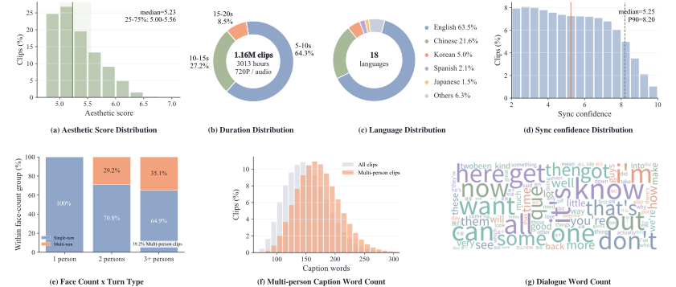
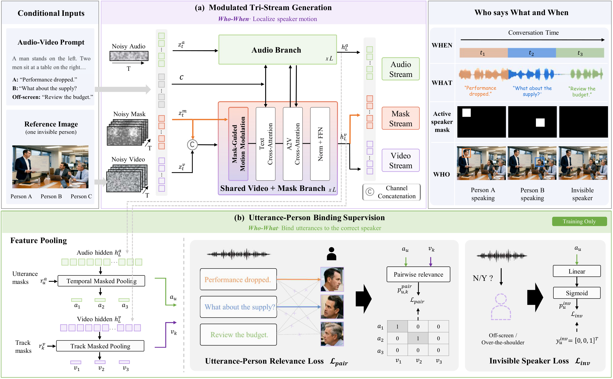

RIGHT PERSON SHOULD SAY RIGHT CONTENT AT RIGHT TIME
Who, What, When: Multi-Person Conversational Audio–Video Generation
1 University of Science and Technology of China 2 HiDream.ai
Abstract
Generating multi-person conversational videos requires a capability that current audio–video generators lack: reliably assigning each utterance to the correct visible person at the correct time. We term this capability speaker attribution, i.e., Who says What and When, and are one of the first to explicitly investigate this problem in Multi-Person Conversational Audio–Video Generation. To address this, we make two complementary advances: attribution-oriented data for training and evaluation, and an attribution-aware method for generation. For the data aspect, we introduce MuCoVid-1M, a multilingual dataset of 1.16M 720p conversational clips (3K hours). Unlike existing human video datasets, it provides fine-grained person tracks, utterance-level transcripts with timestamps, active-speaker states, and speaker-aware audio–visual captions, making person–utterance–time correspondences explicit. From this corpus, we select 400 scenario-balanced diagnostic cases for targeted evaluation. Its five metrics assess utterance–person attribution and person-localized lip synchronization, exposing errors hidden by global synchronization scores. For the method aspect, we propose MuCoGen, an audio-video generation framework that incorporates speaker attribution into both visual motion and speech content generation. Its Modulated Tri-Stream Generation jointly generates audio, video, and dynamic active-speaker masks through flow matching. The generated mask features, in turn, modulate the joint generation process to localize speech-related facial motion on active speakers and suppress leakage to silent participants. Utterance-Person Binding Supervision further aligns timestamp-pooled utterance representations with visible-person tracks and explicitly models off-screen speech to prevent misassignment. On the full MuCoVid-Bench, MuCoGen improves U-SAA by 7.7% and reduces IC-CER by 15.3% relative to LTX-2.3, while also enhancing lip synchronization. MuCoGen also achieves the highest reported Overall score among the compared methods on VerseBench. These results highlight the value of explicit speaker attribution for multi-person conversations.
01 · MOTIVATION
Speaker attribution is essential for multi-person audio–video generation.
A coherent conversation requires each person to say the intended words at the right time—even when the speaker faces away from the camera.
02 · DATASET
MuCoVid-1M connects
person, utterance and time.
A multilingual corpus of conversational clips with the supervision needed to learn who is visible, who is speaking, what is said and when it happens.
| Dataset | Institute | Year | Person | Area | Clips | Duration (h) | Multi-turn | Utter. Anno. | Visual Cap. | Audio Cap. |
|---|---|---|---|---|---|---|---|---|---|---|
| LRS3 | VGG | 2018 | single | head | 151K | 438 | – | – | – | – |
| AVA | 2019 | single | head | 40K | 38 | – | – | – | – | |
| DyConv | Bytedance | 2025 | single | head | – | 200 | – | – | – | – |
| SpeakerVid | StepFun | 2025 | single | body | 5.2M | 8.7K | ✓ | ✓ | ✓ | – |
| VoxConverse | VGG | 2020 | multi | body | 448 | 64 | ✓ | ✓ | – | – |
| MIT | Showlab | 2025 | multi | body | – | 12 | ✓ | ✓ | – | – |
| MuCoVid-1M | USTC | 2026 | multi | body | 1.16M | 3,013 | ✓ | ✓ | ✓ | ✓ |
✓ Provided · – Annotations not provided or clip counts not reported. Utter. Anno.: utterance annotations; Visual Cap. / Audio Cap.: visual / audio captions. K/M denote thousand/million. MuCoVid-1M combines large-scale multi-person conversations with aligned utterance annotations and audio–visual captions.

03 · BENCHMARK
MuCoVid-Bench evaluates
who says what and when
A benchmark designed to evaluate speaker attribution in multi-person audio–video generation, together with person-localized lip synchronization quality.
Normal 200 cases
The active speaker’s face is visible and trackable.
Challenging 200 cases
The actual speaker’s face is unavailable or hard to observe.
100 cases per scenario · 25% each
| The attribution question | Metric | Definition and interpretation |
|---|---|---|
| WhoIs each utterance assigned to the right speaker? | U-SAA ↑Utterance-level Speaker Attribution Accuracy | Match reference and generated utterances one-to-one by normalized text edit distance. A match counts only when distance ≤ τtext = 0.3 and the speaker label agrees, including |
| WhatDoes each person say the right content? | IC-CER ↓Identity-Conditioned Character Error Rate | Concatenate reference and generated utterances separately for each visible identity, compute CER clipped to [0, 1], then average over identities and samples. Both transcripts empty: 0; exactly one empty: 1. Correct words assigned to the wrong person are penalized. |
| WhenDoes each person speak at the right time? | Attr-F1 ↑Attribution F1 | Scale the generated timeline to the reference duration and compare binary speaking states on a common 100-Hz grid. Both silent: F1 = 1; only one silent: F1 = 0. Average over visible identities and samples. |
| Is the intended person’s face synchronized? | ASD-C ↑Active-Speaker-Aware Synchronization Confidence | Apply SyncNet to TalkNet-detected speaking segments of at least five frames on identity-matched generated face tracks. Average available track confidence scores within each identity, then across identities and eligible clips. |
| How large is that person’s synchronization offset? | ASD-O ↓Active-Speaker-Aware Synchronization Offset | Average absolute offsets in frames using the same per-identity and per-clip aggregation. Only observable, matched faces with stored scores contribute; back-facing and off-screen speakers are not evaluated for lip synchronization. |
Notation and evaluation protocol
ℬ: benchmark samples; 𝒰b: reference utterances; 𝒫b: visible identities; ℬsync: clips with at least one scored identity. Hats denote generated predictions. d: normalized text edit distance; p: speaker label; R: identity-specific transcript; A: binary speaking timeline; cb and ob: clip-level confidence and absolute offset. 𝕀[·] is an indicator.
All 400 benchmark samples are manually verified for speaker identity, transcripts, speech boundaries, and invisible-speaker labels. Training and benchmark sets use disjoint source videos, with cross-dataset duplicates removed. Generated videos are processed automatically: each face track is assigned to the reference identity with the highest cosine similarity to its first-frame embedding, using a threshold of 0.40. Tracks below the threshold remain unknown; multiple tracks may share one identity.
TalkNet estimates visible speaking intervals, and segment-level ASR provides transcripts. Speech outside identity-assigned visible speaking intervals receives the shared invisible label. Unmatched reference identities are retained for attribution errors. Synchronization windows follow generated speaking activity; tracks without stored scores and clips without a scored identity are excluded from synchronization averages.
04 · METHOD
MuCoGen routes speech to the intended person.
MuCoGen couples physical motion and semantic content to associate each utterance with the correct speaker. Modulated Tri-Stream Generation (MTSG) jointly generates audio, video, and dynamic active-speaker masks from a text prompt and a reference image. The audio branch interacts with a shared video–mask branch, where the current mask is re-encoded at every flow timestep to modulate video self-attention. Utterance–Person Binding Supervision (UPBS) binds utterances to visible identities and supervises speech without a matching visible speaker during training.

- Tri-stream stateAudio, video, and active-speaker masks evolve together. Mask foreground identifies visible speaking regions and their active intervals; an empty mask indicates no visible active speaker.
- Motion modulationAt every flow timestep, features encoded from the current mask scale aggregated video self-attention outputs before the output projection, guiding speaking motion and suppressing leakage to listeners.
- Utterance bindingTemporal and track masked pooling support utterance–person relevance and invisible-speaker losses during training. UPBS branches are removed at inference and add no inference-time computation or parameter memory.
05 · RESULTS
Speaker attribution and audio–video generation quality
On MuCoVid-Bench, MuCoGen improves U-SAA by 7.7% and reduces IC-CER by 15.3% and ASD-O by 51.3% relative to LTX-2.3. On VerseBench, its Overall score rises from 0.396 to 0.429, an 8.3% improvement and the highest reported score among the compared methods.
Quantitative comparison on MuCoVid-Bench
Five metrics · larger radar radius means better performance
Table: original reported values. ↑ Higher is better; ↓ lower is better.
Radar: min–max normalized to [0, 1] using fixed ranges across all three subsets and five models. IC-CER and ASD-O are reversed so better scores always point outward. This is a display scale, not an aggregate metric.
Generalization beyond realistic human conversations
Plush toys, anthropomorphic animals, anime characters, multilingual dialogue and invisible sources.
Ablation: each design closes a different failure mode
| Variant | U-SAA ↑ | IC-CER ↓ | Attr-F1 ↑ | ASD-C ↑ | ASD-O ↓ |
|---|---|---|---|---|---|
| Baseline | 0.522 | 0.290 | 0.705 | 4.359 | 1.706 |
| w/ MTSG | 0.550 | 0.261 | 0.732 | 4.886 | 1.328 |
| w/ UPBS | 0.548 | 0.270 | 0.712 | 4.626 | 1.504 |
| MuCoGen | 0.575 | 0.238 | 0.728 | 4.974 | 1.237 |
06 · CONCLUSION
In this work, we introduce MuCoGen to address speaker attribution, Who says What and When, in multi-person conversational audio–video generation. Its central design couples physical speaking motion with semantic content. Specifically, MTSG jointly generates active-speaker masks with audio and video and feeds mask features back into generation to localize speaking activity. Complementing this motion control, UPBS binds utterances to their corresponding participants and accounts for speech without a matching visible face. To support learning and evaluating these correspondences, we introduce MuCoVid-1M, comprising 1.16M multilingual 720p clips with aligned person–utterance–time annotations, and MuCoVid-Bench, comprising 400 diagnostic cases and five attribution-oriented metrics.
Experiments substantiate the value of this design. On the full MuCoVid-Bench, MuCoGen improves U-SAA by 7.7% and reduces IC-CER by 15.3% relative to LTX-2.3, while also enhancing lip synchronization. Beyond attribution, it achieves the highest reported Overall score among the compared methods on VerseBench. Component ablations further support the complementary roles of motion control and content binding, and human preferences demonstrate the perceptual value of correct speaker attribution. Taken together, these findings show that explicitly coupling speaker identity, utterance content, and speaking activity improves conversational coherence alongside overall generation quality. Building on this foundation, future work will extend attribution to overlapping speech, longer conversations across scene changes, and participants with small faces.